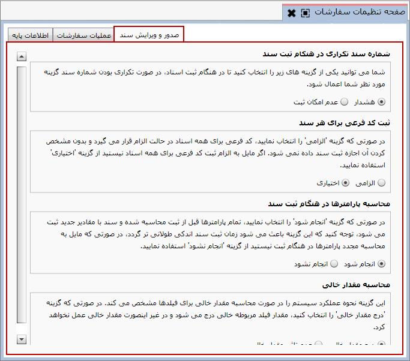

برای مشاهده این صفحه از قسمت تنظیمات روی «صفحه تنظیمات سفارشات» کلیک کنید.
همانطور که مشاهده می کنید این صفحه دارای سه تب «اطلاعات پایه»، «عملیات سفارشات» و «صدور و ویرایش سند» می باشد که با انتخاب هرکدام صفحه مربوطه نمایش داده می شود، در شکل زیر تب«اطلاعات پایه» انتخاب شده است.
در این صفحه امکان دریافت از فایل و ذخیره در فایل عملیات ها و مبناهای آن ها وجود دارد. از آن جا که عملیات سفارشات بر اساس روال عملیات سفارش در سازمان شما تعریف می شود، نمونه عملیات مشخصی در سیستم برای خواندن از فایل تعبیه نشده است. اما با استفاده از گزینه می توانید عملیات سفارشاتی که در سیستم تعریف کرده اید را در فایل xmlذخیره کنید.
توضیحات موجود در صفحه درباره کاربرد این صفحه کامل می باشد. در واقع شما در این قسمت می توانید تنظیم کنید که فرمول های مقادیر پس از صدور اولین سند خرید و فروش قابلیت ویرایش شدن داشته باشند یا خیر.

با انتخاب تب «صدور و ویرایش سند» از صفحه تنظیمات سفارشات پنجره ای نمایان می شود که دارای چهار قسمت است. توضیحات کافی در هر قسمت بیان شده است، بعد از مطالعه هر کدام می توانید با انتخاب یکی ازگزینه ها تنظیمات را به دلخواه انجام دهید.
